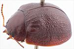
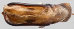
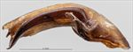
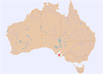

Click on images to enlarge


Male, Warooka, Yorke Peninsula, South Australia


Aedeagus, dorsal view (Warooka, South Australia)


Aedeagus, lateral view (Warooka, South Australia)


Distribution
Name
Trachymela sp Ta118
Reference specimen
2011-092, Warooka, Yorke Peninsula, South Australia.
Adult Description
Length: ♂ 8.1–8.3 mm (n=2), ♀ 8.52 mm (n=1).
Colouration:
- Head: Frons and clypeus reddish-brown, sometimes with fronto-clypeal suture narrowly infuscated or black; labrum straw brown, sometimes with a darker tinge; mandibles reddish-brown with black tips; antennomeres 1–4 light- to mid-brown, 5–11 grading to considerably darker or, more commonly, much darker brown or even black, distal portion of outer antennomeres often infuscated.
- Pronotum: Brown, concolorous with head, almost uniformly so, with at most some vague slightly darker patches on disc along posterior edge and adjacent to centre.
- Scutellum: Brown, concolorous with adjacent region of pronotum, with lateral margins broadly infuscated.
- Elytra: Uniformly brown, concolorous with pronotum, punctures similar to interstices or noticeably darker brown; humeral callus concolorous with surrounding area.
- Venter & Legs: Uniformly reddish-brown, including legs, sometimes with some fractionally paler patches present, especially on abdominal ventrite V; elytral epipleura brown.
- Cuticular Wax: Unknown.
Morphology:
- Shape: Almost evenly rounded from scutellum to apex, with at most a slight increase in curvature close to apex, greatest height viewed laterally in front of (sometimes well in front of) middle of elytral margin.
- Head: Punctures moderately large (pd ≈ 2–2.5× ef) and slightly unevenly and densely distributed. Antennae short (AL/BL: ♂ 38–40%, ♀ 33.3%), filiform.
- Pronotum: Almost evenly curved transversely, with foveal area barely depressed and lateral margins very slightly explanate; epidermis in foveal area behind eyes slightly elevated in a broad circular area in which the puncturation is uninterrupted; discal area with surface even, sometimes nitid, and puncturation usually clearly impressed with punctures similar in size but more regularly formed than those on head, evenly distributed and relatively dense (spacing ≈ 1.5–2.5 pd), becoming noticeably coarser towards lateral margins. Thick front margins join thinner lateral margins in a smoothly rounded right-angle, with lateral margin curving smoothly and initially very gradually and then more rapidly towards rear margin, broadest about 2/3 of distance to posterolateral angle.
- Scutellum: Unpunctured or with sparsely distributed punctures, slightly smaller and shallower than those on pronotum.
- Elytra: Surface evenly curved, punctures surrounded by convex interstices, closely spaced and relatively evenly distributed, VS 1–5 discernable as interrupted low ridges, sometimes (especially V4) as rows of more discrete and widely separated but inconspicuous verrucae, VS 6–9 usually less clearly defined; presence of these and many connecting transverse interstices forms a surface with a granular appearance, appearing even more granular in posterior third due to closer spacing of punctures; much of the area along boundary between disc and margin is much less closely punctured; much finer punctures are scattered sparsely between other punctures on both disc and margin; elytral suture not carinate; posterior third of marginal area slightly to moderately concave; surface discontinuous under humeral callus; lateral margin almost straight or slightly sinuate, with anterior 20% usually angled upwards. Vertical extension of epipleura moderate (HCE/PW = 0.35–0.37).
- Venter: Prosternal process almost parallel or narrowing anteriorly, closed anteriorly, at most a very sparse scatter of setae present along prosternal process and on mesoventrite; a single long seta present on anterior, median, and posterior trochanters; front edge of metaventrite beveled, flat; inner edge of posterior of epipleurae lacking setae.
Male Genitalia (Aedeagus):
- Dimensions: Short (LPE/BL = 28–30%).
- Dorsal view: Shaft almost parallel-sided or slightly sinuate from basal sulcus to about middle of central section, then broadening slightly with maximum width around posterior of ostial opening (WPE/LPE = 0.29–0.32), from where sides converge smoothly and gradually towards apex, tip small and triangular; dorsal surface lightly sclerotized; dorso-median channel present but sometimes short and poorly defined; ostium relatively large; ostial processes extend to about level of spatula.
- Lateral view: Shaft quite evenly and continually curved over most of length with curvature increasing slightly close to apex, tip deflexed.
Immature Stages
Unknown.
Similar species
- Ta15: Exceedingly close to Ta118, with a similarly textured elytral surface. Ta15 tends to have a pronotum that is fractionally more densely and deeply punctured than Ta118 and is always noticeably darker brown. The aedeagus of the two species are almost identical. The inner epipleural surfaces of Ta118 are brown, which is concolorous with the Eyre Peninsula specimens of Ta15 but differs from the Flinders Ranges specimens. It is quite possible that these two taxa are forms of the same species.
Notes
- Taxonomy: It is possible that this species is the same as Trachymela propria (Blackburn).
- Host Associations: No host information is known for Ta118.
Copyright © 2026. All rights reserved.